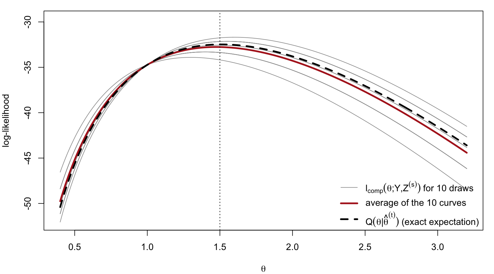
6 EM Algorithms
6.1 Overview of EM
6.1.1 Setup and motivation
Let \(Y\) denote the observed data and \(\theta\) the parameter, with likelihood \(L(\theta) = P(Y \mid \theta)\). In many models this quantity is itself an integral (or sum) over latent or missing data \(Z\):
\[ P(Y \mid \theta) = \int P(Y, Z \mid \theta) \, dZ . \]
The integral is what makes direct maximization awkward: it destroys the product structure that would otherwise make the log-likelihood a sum of simple terms. The EM algorithm avoids it by working with the complete-data likelihood, which retains that structure, and correcting for the fact that \(Z\) is unobserved.
| Likelihood | Log-likelihood | |
|---|---|---|
| Observed | \(L_{\text{obs}}(\theta) = P(Y \mid \theta)\) | \(\ell_{\text{obs}}(\theta) = \log P(Y \mid \theta)\) |
| Complete | \(L_{\text{comp}}(\theta) = P(Y, Z \mid \theta)\) | \(\ell_{\text{comp}}(\theta; Y, Z) = \log P(Y, Z \mid \theta)\) |
6.1.2 The algorithm
Start from \(\hat\theta^{(0)}\). For \(t = 0, 1, 2, \ldots\):
E-step. Replace \(\ell_{\text{obs}}(\theta)\) by the expected complete log-likelihood,
\[ Q\!\left(\theta \mid \hat\theta^{(t)}\right) = E_{Z \mid Y, \hat\theta^{(t)}}\!\left[\ell_{\text{comp}}(\theta; Y, Z)\right]. \]
M-step. Maximize it,
\[ \hat\theta^{(t+1)} = \arg\max_{\theta} \; Q\!\left(\theta \mid \hat\theta^{(t)}\right). \]
Iterate until \(\hat\theta^{(t)}\) converges.
WarningA common misreading
\(Q\) is an average of \(\ell_{\text{comp}}(\theta; Y, Z)\) over \(P(Z \mid Y, \hat\theta^{(t)})\). It is not \(\ell_{\text{comp}}\!\left(\theta; Y, E(Z \mid Y, \hat\theta^{(t)})\right)\) — that is, EM is not “fill in the missing values with their expectations and maximize”. The two coincide only when \(\ell_{\text{comp}}\) happens to be linear in \(Z\), which is true in both examples of this chapter and false in general.
6.1.3 \(Q\) as an average of complete log-likelihoods
Fix \(\hat\theta^{(t)}\). Each draw \(Z^{(s)} \sim P(Z \mid Y, \hat\theta^{(t)})\) gives one curve \(\ell_{\text{comp}}(\theta; Y, Z^{(s)})\), and \(Q(\theta \mid \hat\theta^{(t)})\) is their expectation. The figure uses the censored Poisson model of Section 6.3 with \(\lambda^{(t)} = 1.5\).
Why each iteration cannot decrease \(\ell_{\text{obs}}\), and the view of EM as alternating maximization of a single function, are developed in Section 6.7 at the end of the chapter.
6.2 Example 1: Two-Component Normal Mixture
6.2.1 Model and likelihoods
\[ Z_i \sim \text{Bern}(p), \qquad Y_i \mid Z_i = 1 \sim N(\mu_1, 1), \qquad Y_i \mid Z_i = 0 \sim N(\mu_0, 1) . \]
Observed: \(y_1, \ldots, y_n\). Hidden: \(z_1, \ldots, z_n\). Parameter \(\theta = (\mu_0, \mu_1, p)\).
Complete likelihood
\[ P(y, z \mid \theta) = \prod_{i=1}^{n} P(y_i \mid z_i, \theta) \, P(z_i \mid \theta) = \prod_{i=1}^{n} \varphi(y_i \mid \mu_{z_i}, 1) \, p^{z_i} (1-p)^{1-z_i} . \]
Observed likelihood, summing out each \(z_i\),
\[ P(y \mid \theta) = \prod_{i=1}^{n}\left[\varphi(y_i \mid \mu_1, 1)\, p + \varphi(y_i \mid \mu_0, 1)(1 - p)\right] . \]
The sum inside the product is what makes direct maximization awkward.
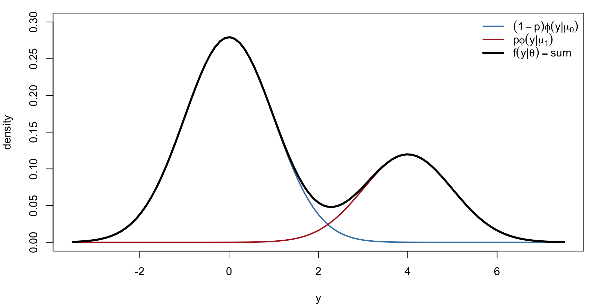
The marginal density may be bimodal or unimodal depending on \(p\) and \(|\mu_1 - \mu_0|\) — a point worth keeping in mind, since the unimodal case is where EM struggles most.
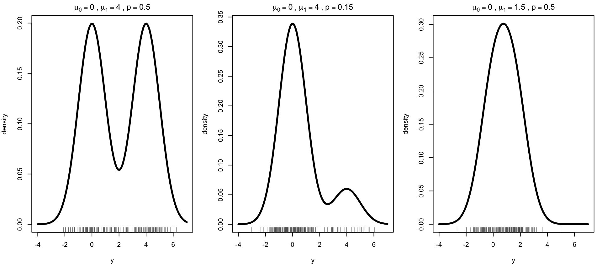
6.2.2 Complete log-likelihood
With \(\log \varphi(y \mid \mu, 1) = -\tfrac{1}{2}(y - \mu)^2 - \log\sqrt{2\pi}\),
\[ \begin{aligned} \ell_{\text{comp}}(\theta; y, z) &= \sum_{i=1}^{n}\left[z_i \log p + (1 - z_i)\log(1-p) - \tfrac{1}{2}(y_i - \mu_{z_i})^2\right] + C \\ &= \left(\sum_{i=1}^{n} z_i\right) \log \frac{p}{1-p} + n \log(1-p) \\ &\quad - \frac{1}{2}\sum_{i=1}^{n}\left[z_i (y_i - \mu_1)^2 + (1 - z_i)(y_i - \mu_0)^2\right] + C . \end{aligned} \]
Two features drive everything that follows. The expression is linear in each \(z_i\), so the E-step needs only \(E(Z_i \mid y_i, \hat\theta^{(t)})\) rather than the full conditional distribution. And given \(z\), the parameters separate: \(p\) is a Bernoulli proportion while \(\mu_1\) and \(\mu_0\) are group means.
6.2.3 E-step: soft classification
Given \(\hat\theta^{(t)} = (\hat\mu_0^{(t)}, \hat\mu_1^{(t)}, \hat p^{(t)})\), Bayes’ rule gives
\[ \hat p_i^{(t)} \equiv P\!\left(Z_i = 1 \mid y_i, \hat\theta^{(t)}\right) = \frac{\varphi\!\left(y_i \mid \hat\mu_1^{(t)}, 1\right) \hat p^{(t)}} {\varphi\!\left(y_i \mid \hat\mu_0^{(t)}, 1\right)\!\left(1 - \hat p^{(t)}\right) + \varphi\!\left(y_i \mid \hat\mu_1^{(t)}, 1\right) \hat p^{(t)}} , \]
and therefore
\[ \begin{aligned} Q\!\left(\theta \mid \hat\theta^{(t)}\right) &= \left(\sum_i \hat p_i^{(t)}\right) \log \frac{p}{1-p} + n \log(1-p) \\ &\quad - \frac{1}{2}\sum_i \left[\hat p_i^{(t)} (y_i - \mu_1)^2 + \left(1 - \hat p_i^{(t)}\right)(y_i - \mu_0)^2\right] . \end{aligned} \]
Computationally, \(\hat p_i^{(t)}\) must be formed on the log scale. Writing \(a_i = \log \varphi(y_i \mid \hat\mu_1^{(t)}, 1) + \log \hat p^{(t)}\) and \(b_i = \log \varphi(y_i \mid \hat\mu_0^{(t)}, 1) + \log(1 - \hat p^{(t)})\), we have \(\hat p_i^{(t)} = \exp\{a_i - \operatorname{lse}(a_i, b_i)\}\) where \(\operatorname{lse}\) is the log-sum-exp function of the chapter on computer arithmetic. Forming the ratio directly underflows as soon as an observation sits far from both means.
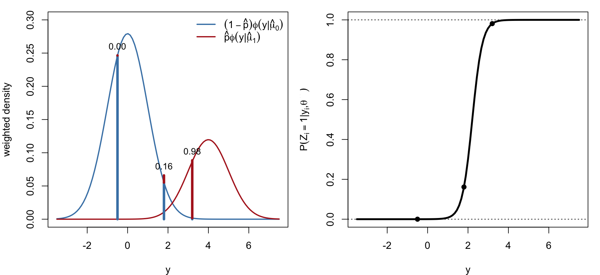
6.2.4 M-step: weighted proportions and means
\(Q\) separates into one term in \(p\) and two in \(\mu_1\), \(\mu_0\), each maximized in closed form.
| Update | Stationary equation \(\Longrightarrow\) solution |
|---|---|
| \(p\) | \(\dfrac{\partial Q}{\partial p} = \dfrac{\sum_i \hat p_i^{(t)}}{p(1-p)} - \dfrac{n}{1-p} = 0 \;\Longrightarrow\; \hat p^{(t+1)} = \dfrac{1}{n}\sum_{i=1}^{n} \hat p_i^{(t)}\) |
| \(\mu_1\) | \(\dfrac{\partial Q}{\partial \mu_1} = \sum_i \hat p_i^{(t)}(y_i - \mu_1) = 0 \;\Longrightarrow\; \hat\mu_1^{(t+1)} = \dfrac{\sum_i \hat p_i^{(t)} y_i}{\sum_i \hat p_i^{(t)}}\) |
| \(\mu_0\) | weights \(1 - \hat p_i^{(t)}\): \(\;\hat\mu_0^{(t+1)} = \dfrac{\sum_i \left(1 - \hat p_i^{(t)}\right) y_i}{\sum_i \left(1 - \hat p_i^{(t)}\right)}\) |
In words: the M-step is the complete-data MLE with each observation split between the two groups in proportion to its soft classification. Return to the E-step with \(\hat\theta^{(t+1)}\) and recompute the responsibilities.
6.2.5 Implementation
log_sum_exp <- function(log_x) {
max_log_x <- max(log_x)
max_log_x + log(sum(exp(log_x - max_log_x)))
}
### observed log-likelihood, theta = (p, mu1, mu0)
log_like_obs <- function(theta, Y) {
log_joint <- cbind(log(theta[1]) + dnorm(Y, theta[2], 1, log = TRUE),
log(1 - theta[1]) + dnorm(Y, theta[3], 1, log = TRUE))
sum(apply(log_joint, 1, log_sum_exp))
}
### E-step: responsibilities P(Z_i = 1 | y_i, theta)
e_step <- function(theta, Y) {
l1 <- dnorm(Y, theta[2], 1, log = TRUE) + log(theta[1])
l0 <- dnorm(Y, theta[3], 1, log = TRUE) + log(1 - theta[1])
exp(l1 - apply(cbind(l1, l0), 1, log_sum_exp))
}
### M-step: closed-form weighted updates
m_step <- function(w, Y) {
c(mean(w),
sum(Y * w) / sum(w),
sum(Y * (1 - w)) / sum(1 - w))
}
em_mixnorm <- function(theta0, Y, no_iters) {
out <- matrix(NA_real_, no_iters + 1, 4,
dimnames = list(NULL, c("p", "mu1", "mu0", "log_lik")))
theta <- theta0
out[1, ] <- c(theta, log_like_obs(theta, Y))
for (i in seq_len(no_iters)) {
theta <- m_step(e_step(theta, Y), Y)
out[i + 1, ] <- c(theta, log_like_obs(theta, Y))
}
out
}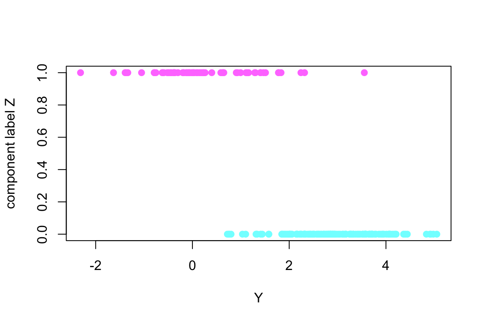
A well-chosen start converges quickly:
Code
round(em_mixnorm(c(0.5, 0, 3), data, 10), 4) p mu1 mu0 log_lik
[1,] 0.5000 0.0000 3.0000 -375.3490
[2,] 0.3377 0.2695 3.0137 -361.6709
[3,] 0.3242 0.2319 2.9768 -361.3077
[4,] 0.3154 0.1956 2.9584 -361.1388
[5,] 0.3094 0.1694 2.9463 -361.0581
[6,] 0.3054 0.1513 2.9380 -361.0202
[7,] 0.3026 0.1389 2.9323 -361.0026
[8,] 0.3007 0.1306 2.9285 -360.9945
[9,] 0.2995 0.1249 2.9258 -360.9908
[10,] 0.2986 0.1211 2.9240 -360.9891
[11,] 0.2980 0.1185 2.9228 -360.9884The monotone increase of the last column is the ascending property in action; it is the single most useful diagnostic when debugging an EM implementation, since any decrease indicates an error in the E- or M-step.
6.2.6 Shinylive App for the EM Algorithm for a Normal Mixture
There is a shinylive app to let you watch the EM algorithm fit a two-component normal mixture, showing how the estimates and the likelihood evolve from iteration to iteration.
6.2.7 Comparison with general-purpose optimizers
EM is not the only way to maximize the observed likelihood. Applying a general-purpose optimizer directly requires attention to the parameter space: \(p\) must lie in \((0,1)\), so we reparameterize with the logit.
Code
neg_loglike_obs <- function(theta, Y) -log_like_obs(theta, Y)
### transformed parameterization: ttheta[1] = logit(p)
neg_loglike_obs_transf <- function(ttheta, Y) {
theta <- ttheta
theta[1] <- 1 / (1 + exp(-ttheta[1]))
neg_loglike_obs(theta, Y)
}
lp0 <- log(0.3 / 0.7)
### Newton-type, untransformed: p can leave (0, 1)
try(nlm(neg_loglike_obs, p = c(0.3, 0, 3), Y = data)$estimate)[1] 0.2968473 0.1131871 2.9203484Code
try(nlm(neg_loglike_obs, p = c(0.5, -10, 5), Y = data)$estimate)[1] 5.869764e-06 -1.000004e+01 4.038014e+00Code
### Newton-type, transformed
try(nlm(neg_loglike_obs_transf, p = c(lp0, 0, 3), Y = data)$estimate)[1] -0.8623555 0.1131868 2.9203483Code
try(nlm(neg_loglike_obs_transf, p = c(0, -10, 5), Y = data)$estimate)[1] -16.604291 -9.996458 2.087049Code
### Nelder-Mead
try(optim(c(lp0, 0, 3), neg_loglike_obs_transf, Y = data, method = "Nelder-Mead")$par)[1] -0.8623197 0.1132163 2.9203325Code
try(optim(c(0, -10, 5), neg_loglike_obs_transf, Y = data, method = "Nelder-Mead")$par)[1] -0.8622804 0.1131101 2.9206253Code
### Conjugate gradient
try(optim(c(0, 0, 3), neg_loglike_obs_transf, Y = data, method = "CG")$par)[1] -0.8623543 0.1131880 2.9203502Code
try(optim(c(0, -10, 5), neg_loglike_obs_transf, Y = data, method = "CG")$par)[1] -6.090903 -9.998146 2.080878Applied to the observed log-likelihood, these algorithms are more fragile than EM when the initial values are poorly chosen: the untransformed runs can step outside \(p \in (0,1)\) and produce NaN, and the gradient-based methods can stall in the flat region that a distant start creates. Nelder–Mead is the most stable of the three here, at the cost of many more function evaluations.
| EM | General optimizer on \(\ell_{\text{obs}}\) | |
|---|---|---|
| Constraints | Respected automatically by the M-step | Require reparameterization |
| Monotonicity | Guaranteed; a decrease signals a coding error | None; a bad step can be accepted |
| Derivatives | None needed | Gradient helpful, Hessian better |
| Convergence rate | Linear, rate set by the missing information | Superlinear or quadratic near the optimum |
| Standard errors | Not produced; need Louis’ method or a bootstrap | Hessian available directly |
| Behaviour from poor starts | Slow but stable | Can fail outright |
The last row is the practical trade. EM rarely fails and rarely needs tuning, which is why it dominates in mixture and latent-variable modelling; it is also slow near the optimum and gives no standard errors, which is why a hybrid — EM to get close, then a Newton step to polish and to obtain the Hessian — is common in production code.
6.3 Example 2: Censored Poisson Data
6.3.1 Truncated distributions in brief
Let \(X \sim f(x)\) and \(Y = I(X > c)\). Then \(Y \sim \text{Bern}\{P(X > c)\}\), and the conditional distribution of \(X\) given \(Y\) is \(f\) restricted to one side of \(c\) and renormalized:
\[ f(x \mid Y = 1) = \frac{f(x)\, I(x > c)}{\int_c^{\infty} f(t)\,dt}, \qquad f(x \mid Y = 0) = \frac{f(x)\, I(x \le c)}{\int_{-\infty}^{c} f(t)\,dt} . \]
For discrete \(X\) the integrals are sums. This is exactly the distribution the E-step needs when an observation is known only to lie on one side of \(c\).
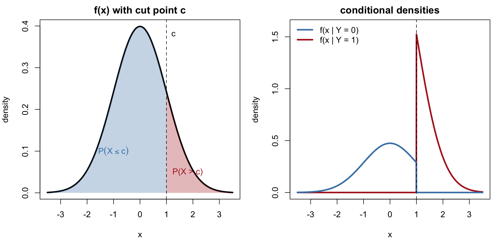
6.3.2 Data and likelihoods
Let \(y_i \overset{iid}{\sim} \text{Pois}(\lambda)\) for \(i = 1, \ldots, n\). The first \(m\) values are observed exactly; for \(i > m\) we know only that \(y_i < 2\), recorded as \(x_i = I(y_i < 2) = 1\).
Observed data: \(y_1, \ldots, y_m\) together with \(x_{m+1} = \cdots = x_n = 1\). Missing: \(y_{m+1}, \ldots, y_n\).
Complete likelihood
\[ \prod_{i=1}^{n} f^{\text{Pois}}(y_i \mid \lambda) \cdot \prod_{i=m+1}^{n} I(y_i < 2) . \]
Observed likelihood
\[ \prod_{i=1}^{m} f^{\text{Pois}}(y_i \mid \lambda) \cdot \prod_{i=m+1}^{n} P(y_i < 2 \mid \lambda), \qquad P(y_i < 2 \mid \lambda) = e^{-\lambda}(1 + \lambda) . \]
Taking logarithms and dropping constants,
\[ \ell_{\text{obs}}(\lambda) = m \bar y_{1:m} \log \lambda - n \lambda + (n - m)\log(1 + \lambda) . \]
The second factor makes the MLE nonlinear in \(\lambda\); EM sidesteps it.
6.3.3 E-step
\[ \ell_{\text{comp}}(\lambda) = -n\lambda + (\log \lambda) \sum_{i=1}^{m} y_i + (\log \lambda) \underbrace{\sum_{i=m+1}^{n} y_i}_{\text{missing}} - \sum_{i=1}^{n} \log(y_i!) . \]
For \(i > m\) we have \(y_i \in \{0, 1\}\), and the Poisson pmf truncated to that set given \(\lambda^{(t)}\) is
\[ P\!\left(y_i = 0 \mid x_i = 1\right) = \frac{1}{1 + \lambda^{(t)}}, \qquad P\!\left(y_i = 1 \mid x_i = 1\right) = \frac{\lambda^{(t)}}{1 + \lambda^{(t)}} , \]
so that
\[ \hat y^{(t)} \equiv E\!\left(y_i \mid x_i = 1, \lambda^{(t)}\right) = \frac{\lambda^{(t)}}{1 + \lambda^{(t)}} . \]
Since \(y_i! = 1\) for \(y_i \in \{0, 1\}\), the \(\log(y_i!)\) term is a known constant and no further expectation is needed.
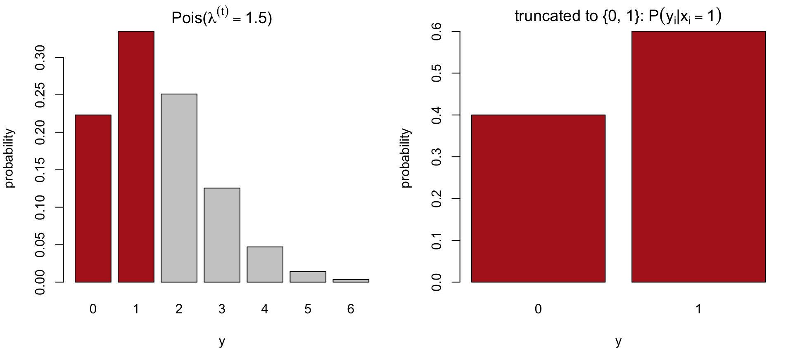
6.3.4 M-step and the EM update
\[ Q\!\left(\lambda \mid \lambda^{(t)}\right) = -n\lambda + (\log \lambda)\left[\sum_{i=1}^{m} y_i + (n - m)\,\hat y^{(t)}\right] + C^{(t)} , \]
\[ \frac{\partial Q}{\partial \lambda} = -n + \frac{1}{\lambda}\left[\sum_{i=1}^{m} y_i + (n - m)\,\hat y^{(t)}\right] = 0 , \]
\[ \Longrightarrow \quad \lambda^{(t+1)} = \frac{m\, \bar y_{1:m} + (n - m)\dfrac{\lambda^{(t)}}{1 + \lambda^{(t)}}}{n} . \]
The update is the ordinary Poisson MLE — the sample mean — with each censored value replaced by its conditional expectation. As warned in the overview, this works only because \(\ell_{\text{comp}}\) is linear in the missing \(y_i\).
6.3.5 Implementation
### observed log-likelihood, up to an additive constant
## m : number of exactly observed counts
## ybar : their mean
## ncen : number of counts known only to be < 2
loglik_obs_pois <- function(m, ybar, ncen, lambda) {
m * ybar * log(lambda) - (m + ncen) * lambda + ncen * log(1 + lambda)
}
em_censored_poisson <- function(m, ybar, ncen,
lambda0 = (m * ybar + ncen) / (m + ncen),
iterations = 20) {
out <- matrix(NA_real_, iterations + 1, 2,
dimnames = list(NULL, c("lambda", "log_lik")))
lambda <- lambda0
out[1, ] <- c(lambda, loglik_obs_pois(m, ybar, ncen, lambda))
for (i in seq_len(iterations)) {
y_mis <- lambda / (1 + lambda) # E-step
lambda <- (m * ybar + ncen * y_mis) / (m + ncen) # M-step
out[i + 1, ] <- c(lambda, loglik_obs_pois(m, ybar, ncen, lambda))
}
out
}Code
set.seed(812)
y <- rpois(200, 3)
ncen <- sum(y < 2)
m <- length(y) - ncen
ybar <- mean(y[y >= 2])
c(m = m, ncen = ncen, ybar_observed = ybar) m ncen ybar_observed
157.000000 43.000000 3.528662 Discarding the censored observations and averaging the rest gives an estimate clearly above the true mean of \(3\): conditioning on \(y \ge 2\) removes the small counts and biases the mean upward. EM recovers them.
Code
round(em_censored_poisson(m, ybar, ncen, lambda0 = 100, iterations = 10), 5) lambda log_lik
[1,] 100.00000 -17250.28553
[2,] 2.98287 68.31091
[3,] 2.93102 68.40282
[4,] 2.93031 68.40284
[5,] 2.93030 68.40284
[6,] 2.93030 68.40284
[7,] 2.93030 68.40284
[8,] 2.93030 68.40284
[9,] 2.93030 68.40284
[10,] 2.93030 68.40284
[11,] 2.93030 68.40284Code
round(em_censored_poisson(m, ybar, ncen, lambda0 = ybar, iterations = 10), 5) lambda log_lik
[1,] 3.52866 57.76492
[2,] 2.93752 68.40109
[3,] 2.93040 68.40284
[4,] 2.93030 68.40284
[5,] 2.93030 68.40284
[6,] 2.93030 68.40284
[7,] 2.93030 68.40284
[8,] 2.93030 68.40284
[9,] 2.93030 68.40284
[10,] 2.93030 68.40284
[11,] 2.93030 68.40284Both starting values reach the same limit, and the log-likelihood increases monotonically from each. Note how slowly the run from \(\lambda^{(0)} = 100\) descends at first — a single-parameter illustration of the same slow-drift behaviour seen in the mixture app.
6.3.6 Comparison with general-purpose optimizers
Code
neg_loglik_pois <- function(lambda, m, ybar, ncen) {
-loglik_obs_pois(m, ybar, ncen, lambda)
}
try(nlm(neg_loglik_pois, p = ybar, m = m, ybar = ybar, ncen = ncen)$estimate)[1] 2.930295Code
try(nlm(neg_loglik_pois, p = 100, m = m, ybar = ybar, ncen = ncen)$estimate)[1] 2.930295Code
try(optim(ybar, neg_loglik_pois, method = "CG",
m = m, ybar = ybar, ncen = ncen)$par)[1] 2.930297Code
try(optim(100, neg_loglik_pois, method = "CG",
m = m, ybar = ybar, ncen = ncen)$par)[1] 2.930297With one parameter and a smooth concave objective this is an easy problem for any method; the contrast with the mixture example is instructive, since there the multimodality and the constraint on \(p\) were what made the general optimizers fragile.
6.4 Example 3: Right-Censored Weibull Data
Survival and reliability data are the standard home of censoring. A unit is followed until it fails or until the study ends, whichever comes first, and a unit still running at the end tells us only that its lifetime exceeds the follow-up time. The Poisson example of Section 6.3 censored a count; here the missing quantity is a continuous lifetime, and, unlike the Poisson case, the complete-data log-likelihood is not linear in it.
6.4.1 Data and likelihoods
Let \(T_1, \ldots, T_n\) be independent lifetimes with the Weibull density and survival function
\[ f(t \mid k, \lambda) = \frac{k}{\lambda}\Big(\frac{t}{\lambda}\Big)^{k-1} e^{-(t/\lambda)^k}, \qquad S(t \mid k, \lambda) = P(T > t) = e^{-(t/\lambda)^k}, \qquad t > 0, \]
with shape \(k > 0\) and scale \(\lambda > 0\) (\(k = 1\) is the exponential distribution); Figure 6.8 shows how they change the density. Unit \(i\) is followed up to a censoring time \(c_i\), independent of \(T_i\), and we record
\[ y_i = \min(T_i, c_i), \qquad \delta_i = I(T_i \le c_i) . \]
Let \(d = \sum_i \delta_i\) be the number of observed failures. For a censored unit (\(\delta_i = 0\)) we know only that \(T_i > c_i = y_i\).
Observed data: \((y_i, \delta_i)\), \(i = 1, \ldots, n\). Missing: \(T_i\) for the units with \(\delta_i = 0\).
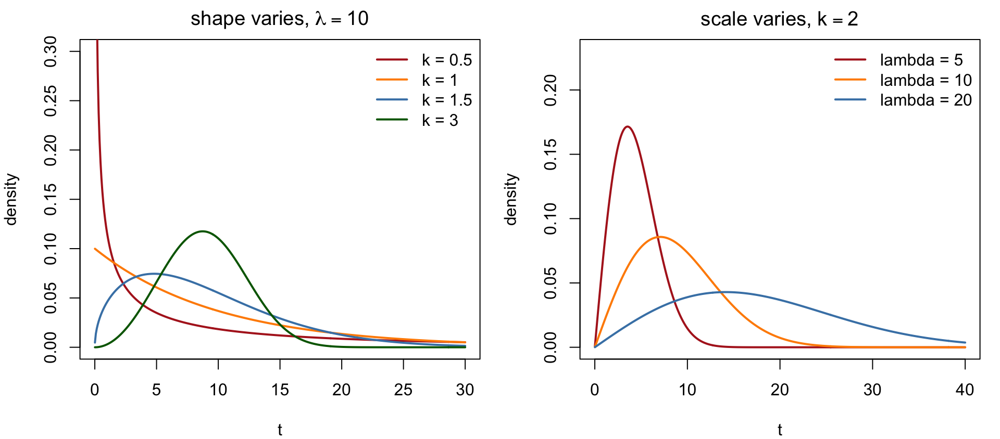
Observed likelihood. A failure contributes its density, a censored unit its survival probability:
\[ L_{\text{obs}}(k, \lambda) = \prod_{i:\,\delta_i = 1} f(y_i \mid k, \lambda) \prod_{i:\,\delta_i = 0} S(y_i \mid k, \lambda), \]
\[ \ell_{\text{obs}}(k, \lambda) = d \log k - d\, k \log \lambda + (k - 1) \sum_{i:\,\delta_i = 1} \log y_i - \sum_{i=1}^{n} \Big(\frac{y_i}{\lambda}\Big)^k . \]
If \(k\) is known, setting \(\partial \ell_{\text{obs}} / \partial \lambda = 0\) gives \(\hat\lambda^k = \sum_{i=1}^n y_i^k / d\), but for unknown \(k\) there is no closed form, and the maximization has to be done numerically. EM replaces it by a sequence of simpler problems.
Complete-data log-likelihood. If all \(T_i\) were seen,
\[ \ell_{\text{comp}}(k, \lambda) = n \log k - n k \log \lambda + (k - 1) \sum_{i=1}^{n} \log T_i - \lambda^{-k} \sum_{i=1}^{n} T_i^{\,k} . \]
It depends on the missing \(T_i\) through \(\log T_i\) and \(T_i^{\,k}\), two nonlinear functions. As warned in the overview, the E-step therefore needs \(E(\log T_i \mid \cdot)\) and \(E(T_i^{\,k} \mid \cdot)\), not \(\big(\log E(T_i \mid \cdot)\big)\) or \(E(T_i \mid \cdot)^k\), and substituting \(E(T_i \mid \cdot)\) for \(T_i\) would give the wrong algorithm.
6.4.2 E-step
Write \(\theta^{(t)} = (k_t, \lambda_t)\) for the current value. The key fact is that \(U = (T/\lambda_t)^{k_t}\) has the standard exponential distribution, so for a censored unit
\[ T_i > c_i \iff U_i > a_i, \qquad a_i = (c_i / \lambda_t)^{k_t}, \]
and by the memoryless property of the exponential distribution \(U_i \mid U_i > a_i \;\overset{d}{=}\; a_i + E\) with \(E \sim \text{Exp}(1)\). Hence, given the data and \(\theta^{(t)}\),
\[ T_i = \lambda_t \,(a_i + E)^{1/k_t}, \qquad E \sim \text{Exp}(1), \]
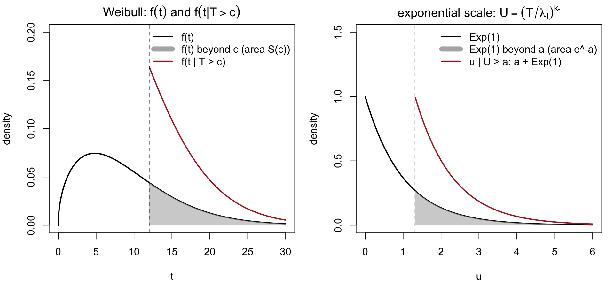
Figure 6.9 illustrates the two conditional distributions. which gives both expectations that are needed. For any power \(s > 0\),
\[ E\big(T_i^{\,s} \mid T_i > c_i, \theta^{(t)}\big) = \lambda_t^{\,s}\, E\big[(a_i + E)^{s/k_t}\big] = \lambda_t^{\,s}\, e^{a_i}\, \Gamma\!\big(1 + s/k_t,\; a_i\big), \]
where \(\Gamma(b, a) = \int_a^\infty u^{b-1} e^{-u}\,du\) is the upper incomplete gamma function. For the power \(s = k_t\) this reduces to the elementary expression \(\lambda_t^{k_t}(a_i + 1) = c_i^{k_t} + \lambda_t^{k_t}\): a censored unit is expected to run on for one more unit of the exponential clock. For the logarithm, integration by parts gives
\[ E\big(\log T_i \mid T_i > c_i, \theta^{(t)}\big) = \log \lambda_t + \frac{1}{k_t}\Big[\log a_i + e^{a_i} E_1(a_i)\Big], \qquad E_1(a) = \int_a^\infty \frac{e^{-u}}{u}\,du , \]
the exponential integral. For an observed failure the expectations are simply \(y_i^{\,s}\) and \(\log y_i\). Collect
\[ S_{\log}^{(t)} = \sum_{i=1}^{n} E\big(\log T_i \mid \cdot\big), \qquad S_k^{(t)}(k) = \sum_{i=1}^{n} E\big(T_i^{\,k} \mid \cdot\big) = \sum_{i:\,\delta_i = 1} y_i^{\,k} + \sum_{i:\,\delta_i = 0} \lambda_t^{\,k}\, e^{a_i}\, \Gamma\!\big(1 + k/k_t,\; a_i\big) . \]
Then
\[ Q\big(k, \lambda \mid \theta^{(t)}\big) = n \log k - n k \log \lambda + (k - 1)\, S_{\log}^{(t)} - \lambda^{-k} S_k^{(t)}(k) . \]
6.4.3 M-step
For fixed \(k\), \(\partial Q / \partial \lambda = -nk/\lambda + k \lambda^{-k-1} S_k^{(t)}(k) = 0\) gives
\[ \lambda^{k} = \frac{1}{n} S_k^{(t)}(k) , \]
the Weibull MLE of \(\lambda^k\) for complete data, with each \(T_i^{\,k}\) replaced by its conditional expectation. Substituting this back gives the profile of \(Q\) in \(k\) alone, up to a constant,
\[ Q_p(k) = n \log k - n \log\!\Big(\tfrac{1}{n} S_k^{(t)}(k)\Big) + (k - 1)\, S_{\log}^{(t)}, \]
so the M-step maximizes the one-dimensional function \(Q_p\) (here by optimize) and then sets \(\lambda_{t+1} = \big(S_k^{(t)}(k_{t+1})/n\big)^{1/k_{t+1}}\). Because \(S_k^{(t)}(k)\) depends on \(k\), no closed form exists for \(k_{t+1}\), but every M-step is a cheap one-dimensional problem, whereas the original problem couples \(k\) and \(\lambda\) through the censored terms.
6.4.4 Special case: known shape
If \(k\) is known, only \(E(T_i^{\,k} \mid \cdot) = c_i^{\,k} + \lambda_t^{\,k}\) is needed, and the update is in closed form,
\[ \lambda_{t+1}^{\,k} = \frac{1}{n}\Big[\sum_{i:\,\delta_i = 1} y_i^{\,k} + \sum_{i:\,\delta_i = 0} \big(y_i^{\,k} + \lambda_t^{\,k}\big)\Big] = \frac{\sum_{i=1}^n y_i^{\,k} + (n - d)\,\lambda_t^{\,k}}{n} , \]
the same structure as the Poisson update: the complete-data estimate with each censored value replaced by its conditional expectation. Its fixed point satisfies \(\lambda^k = \big(\sum_i y_i^{\,k} + (n-d)\lambda^k\big)/n\), that is \(\lambda^k = \sum_i y_i^{\,k}/d\), which is the MLE. Subtracting the fixed point from the update gives, exactly,
\[ \lambda_{t+1}^{\,k} - \hat\lambda^{\,k} = \frac{n - d}{n}\,\big(\lambda_t^{\,k} - \hat\lambda^{\,k}\big) , \]
so the error contracts by the fraction of censored units at every iteration. This is the general rule that EM converges at a rate equal to the fraction of missing information: with 10% censoring the algorithm is fast, and with 70% censoring it is slow.
6.4.5 Implementation
### observed log-likelihood; y = min(T, c), event = (T <= c)
loglik_weib <- function(k, lam, y, event) {
sum(event * (log(k) - k * log(lam) + (k - 1) * log(y))) - sum((y / lam)^k)
}
### E(log(a + E)), E ~ Exp(1): the integral behind E(log T | T > c)
elog_term <- function(a) integrate(function(x) log(a + x) * exp(-x), 0, Inf)$value
### E-step: the two sums S_log and S_k(.) of the text
e_step_weib <- function(y, event, k_t, lam_t) {
cen <- !event
a <- (y[cen] / lam_t)^k_t
elogT <- log(y)
elogT[cen] <- log(lam_t) + vapply(a, elog_term, numeric(1)) / k_t
## S_k(k) = sum_i E(T_i^k | data, theta_t); computed on the log scale so that
## a large a = (c / lam_t)^k_t cannot overflow exp(a)
S_k <- function(k) {
s <- k / k_t
sum(y[event]^k) +
sum(lam_t^k * exp(a + pgamma(a, s + 1, lower.tail = FALSE, log.p = TRUE) +
lgamma(s + 1)))
}
list(S_log = sum(elogT), S_k = S_k)
}
### EM: the M-step maximizes the profile Q_p(k) in one dimension, then sets lambda
em_weib <- function(y, event, k0 = 1, lam0 = mean(y), iterations = 200, tol = 1e-10) {
n <- length(y); k <- k0; lam <- lam0
out <- matrix(NA_real_, iterations + 1, 3,
dimnames = list(NULL, c("k", "lambda", "log_lik")))
out[1, ] <- c(k, lam, loglik_weib(k, lam, y, event))
for (i in seq_len(iterations)) {
E <- e_step_weib(y, event, k, lam) # E-step
Qp <- function(kk) n * log(kk) - n * log(E$S_k(kk) / n) + (kk - 1) * E$S_log
k <- optimize(Qp, c(k / 4, 4 * k), maximum = TRUE, tol = 1e-12)$maximum # M-step
lam <- (E$S_k(k) / n)^(1 / k)
out[i + 1, ] <- c(k, lam, loglik_weib(k, lam, y, event))
if (abs(out[i + 1, 3] - out[i, 3]) < tol) {
out <- out[seq_len(i + 1), , drop = FALSE]; break
}
}
out
}
### known shape: the closed-form update of the text
em_weib_known_k <- function(y, event, k, lam0 = mean(y), iterations = 200, tol = 1e-10) {
n <- length(y); d <- sum(event); path <- lam <- lam0
for (i in seq_len(iterations)) {
lam_new <- ((sum(y^k) + (n - d) * lam^k) / n)^(1 / k)
path <- c(path, lam_new)
if (abs(lam_new - lam) < tol * lam) break
lam <- lam_new
}
path
}Before using the E-step it is worth checking the two formulas against brute force. Draw \(T = \lambda_t (a + E)^{1/k_t}\) many times and compare:
Code
set.seed(812)
a <- 1.3; k_t <- 1.7; lam_t <- 8
Tsim <- lam_t * (a + rexp(1e6))^(1 / k_t)
c(monte_carlo = mean(log(Tsim)), formula = log(lam_t) + elog_term(a) / k_t)monte_carlo formula
2.526064 2.526132 Code
c(monte_carlo = mean(Tsim^2),
formula = lam_t^2 * exp(a + pgamma(a, 2 / k_t + 1, lower.tail = FALSE, log.p = TRUE) +
lgamma(2 / k_t + 1)))monte_carlo formula
173.4084 173.4163 6.4.6 Simulation 1: one data set
Lifetimes are Weibull with \(k = 1.5\) and \(\lambda = 10\), and censoring times are exponential with mean \(20\), independent of the lifetimes, which censors about 30% of \(n = 200\) units.
Code
set.seed(812)
n <- 200; k_true <- 1.5; lam_true <- 10
Tlife <- rweibull(n, k_true, lam_true)
cens <- rexp(n, 1 / 20)
y <- pmin(Tlife, cens)
event <- Tlife <= cens
c(censored_fraction = mean(!event), failures = sum(event))censored_fraction failures
0.285 143.000 Figure 6.10 shows the data against the generating density: a censored unit is plotted at its censoring time, so the red points sit where the follow-up ended and say only that the lifetime lies to their right.
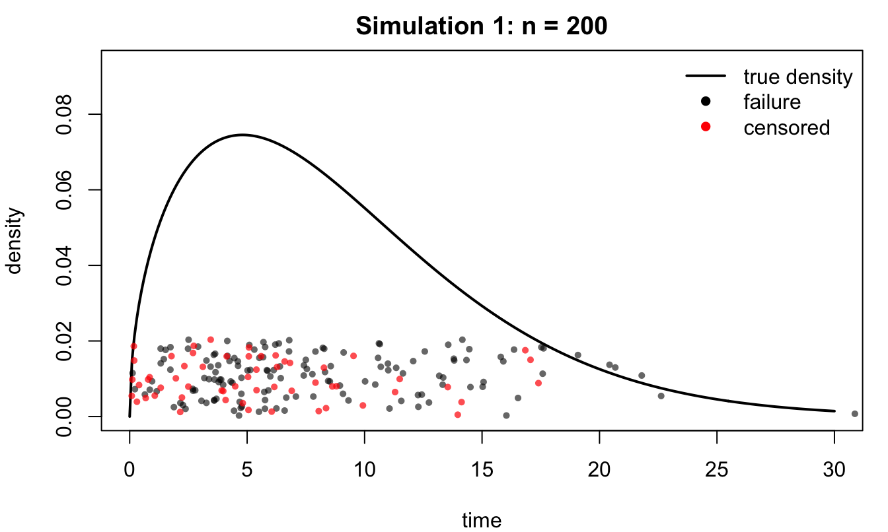
Code
fit <- em_weib(y, event, k0 = 1, lam0 = mean(y))
round(fit[c(1:6, nrow(fit)), ], 5) k lambda log_lik
[1,] 1.00000 7.18357 -481.9669
[2,] 1.41501 10.16854 -455.0381
[3,] 1.50462 10.25382 -454.2307
[4,] 1.52980 10.18649 -454.1279
[5,] 1.53877 10.14845 -454.1106
[6,] 1.54225 10.13184 -454.1077
[7,] 1.54457 10.12033 -454.1071Code
nrow(fit) - 1 # iterations used[1] 15Code
all(diff(fit[, "log_lik"]) >= -1e-10) # ascending property[1] TRUEThe log-likelihood increases at every iteration, as the ascending property requires. To check the limit, compare with a direct numerical maximization of \(\ell_{\text{obs}}\) and with the Weibull regression of the survival package, which fits the same model by a Newton-type method:
Code
direct <- optim(c(0, 0), function(p) -loglik_weib(exp(p[1]), exp(p[2]), y, event),
control = list(reltol = 1e-14))
sr <- survival::survreg(survival::Surv(y, event) ~ 1, dist = "weibull")
rbind(EM = fit[nrow(fit), c("k", "lambda")],
optim = exp(direct$par),
survreg = c(1 / sr$scale, exp(coef(sr)))) k lambda
EM 1.544572 10.12033
optim 1.544572 10.12033
survreg 1.544572 10.12033The three agree to several digits. Figure 6.11 shows the EM paths from three different starting values on the contours of \(\ell_{\text{obs}}\).
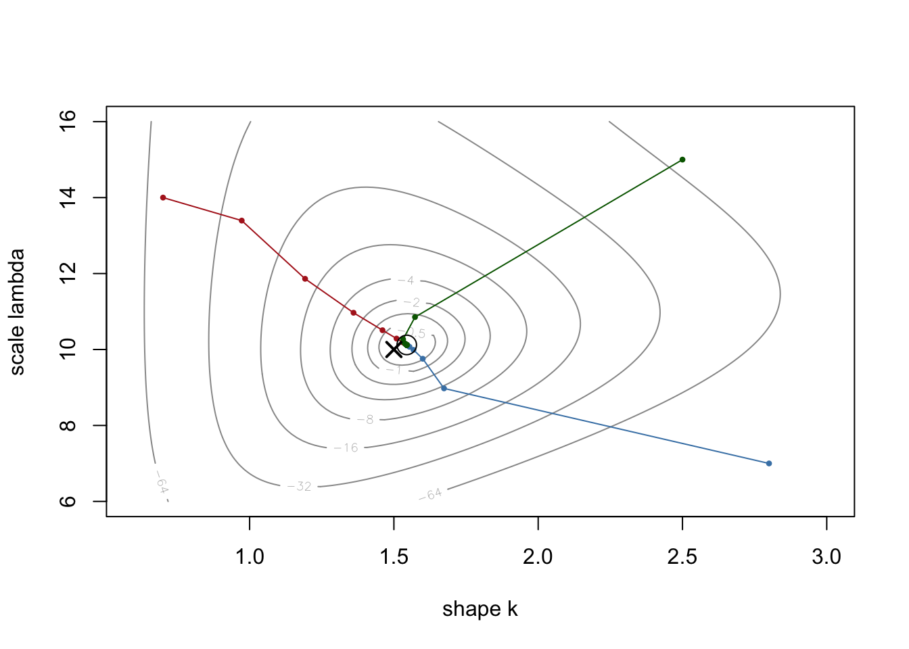
6.4.7 Simulation 2: the censoring rate sets the speed
For known shape (\(k = 2\)) the contraction factor is the censored fraction, as derived above. The simulation draws four data sets of \(n = 400\) lifetimes with increasing censoring (Figure 6.12), then runs the closed-form EM on each and compares the observed ratio of successive errors with the censored fraction (Table 6.4).
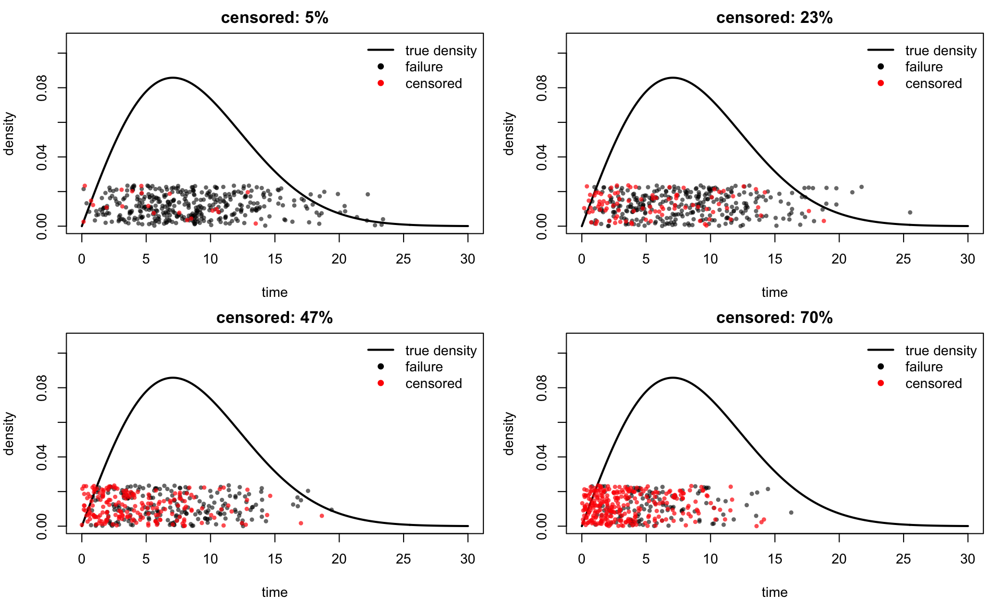
The error of iteration \(t\) is the distance to the limit, \(e_t = |\lambda_t - \hat\lambda|\), where \(\hat\lambda\) is the value the iteration converges to (the last iterate of the run, which equals the MLE \((\sum_i y_i^k / d)^{1/k}\) up to the tolerance). The error ratio is \(e_{t+1}/e_t\), the factor by which one more EM iteration shrinks the error; a ratio of \(0.5\) means the error halves each iteration, and a ratio close to \(1\) means the iteration crawls. The derivation above shows that \(\lambda^k_{t+1} - \hat\lambda^k = \frac{n-d}{n}(\lambda^k_t - \hat\lambda^k)\) holds exactly, so the ratio for \(\lambda^k\) is the censored fraction at every iteration; for \(\lambda\) itself it approaches the same value once the iterates are close to \(\hat\lambda\). The table reports the ratio of the errors at iterations \(7\) and \(6\) (late enough for the approach to the limit, early enough that rounding error in \(\hat\lambda\) does not matter), next to the realized censored fraction. The number of iterations needed to gain a fixed accuracy is then about \(\log(\text{tolerance}) / \log(\text{ratio})\), which is why the iteration count grows sharply as the ratio approaches 1.
Code
rate_row <- function(dat, k = 2) {
p <- em_weib_known_k(dat$y, dat$event, k, tol = 1e-13)
err <- abs(p - tail(p, 1))
c(censored = mean(!dat$event), iterations = length(p) - 1,
error_ratio = err[8] / err[7])
}
rate_tab <- t(sapply(rate_data, rate_row))
knitr::kable(round(rate_tab, 3))| censored | iterations | error_ratio |
|---|---|---|
| 0.052 | 11 | 0.052 |
| 0.228 | 21 | 0.227 |
| 0.472 | 39 | 0.472 |
| 0.703 | 80 | 0.697 |
The same holds for the full two-parameter EM, whose speed also falls as censoring grows (Table 6.5, column iterations).
6.4.8 Simulation 3: what ignoring the censoring costs
Finally, a Monte Carlo experiment with \(n = 100\) and true values \(k = 2\), \(\lambda = 10\). Each data set is analysed in three ways: EM with the censoring accounted for, discarding the censored units, and treating the censoring times as if they were failure times. The averages over 200 replications are in Table 6.5. Figure 6.13 shows one simulated data set at each censoring level.
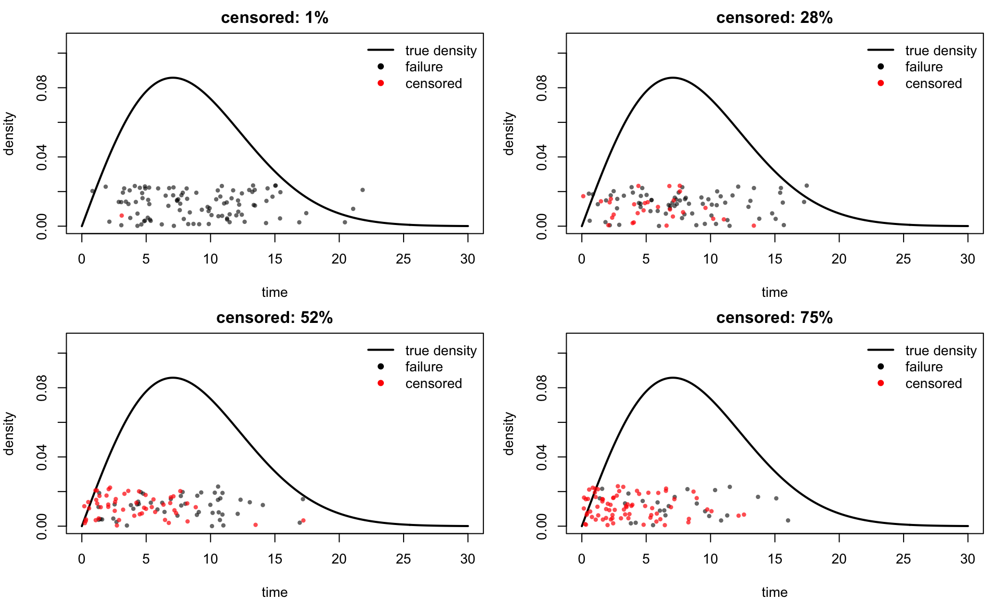
Code
set.seed(812)
sim_weib <- function(mean_cens, nrep = 200, n = 100, k = 2, lam = 10) {
res <- replicate(nrep, {
Tl <- rweibull(n, k, lam); cc <- rexp(n, 1 / mean_cens)
yy <- pmin(Tl, cc); ee <- Tl <= cc
r <- em_weib(yy, ee, 1, mean(yy), tol = 1e-8)
drop <- survival::survreg(survival::Surv(yy[ee], rep(TRUE, sum(ee))) ~ 1,
dist = "weibull")
asfail <- survival::survreg(survival::Surv(yy, rep(TRUE, n)) ~ 1, dist = "weibull")
c(censored = mean(!ee), iterations = nrow(r) - 1,
k_EM = unname(r[nrow(r), "k"]), lambda_EM = unname(r[nrow(r), "lambda"]),
k_drop = 1 / drop$scale, lambda_drop = unname(exp(coef(drop))),
k_asfail = 1 / asfail$scale, lambda_asfail = unname(exp(coef(asfail))))
})
rowMeans(res)
}
mc <- t(sapply(c(200, 30, 12, 6), sim_weib))
mc <- as.data.frame(round(mc, 2))
names(mc) <- c("censored", "iterations", "k_EM", "lam_EM", "k_drop", "lam_drop",
"k_fail", "lam_fail")
gt::gt(mc) |>
gt::tab_spanner("EM", columns = c(k_EM, lam_EM)) |>
gt::tab_spanner("Drop Censored Obs", columns = c(k_drop, lam_drop)) |>
gt::tab_spanner("As Failures", columns = c(k_fail, lam_fail)) |>
gt::cols_label(censored = "censored", iterations = "iterations",
k_EM = gt::md("*k*"), k_drop = gt::md("*k*"), k_fail = gt::md("*k*"),
lam_EM = "λ", lam_drop = "λ",
lam_fail = "λ")| censored | iterations |
EM
|
Drop Censored Obs
|
As Failures
|
|||
|---|---|---|---|---|---|---|---|
| k | λ | k | λ | k | λ | ||
| 0.04 | 5.60 | 2.03 | 10.05 | 2.01 | 9.93 | 1.95 | 9.75 |
| 0.25 | 11.71 | 2.04 | 10.06 | 1.97 | 9.24 | 1.66 | 8.25 |
| 0.49 | 21.52 | 2.05 | 10.03 | 1.90 | 8.21 | 1.39 | 6.36 |
| 0.71 | 43.49 | 2.07 | 10.06 | 1.84 | 6.80 | 1.21 | 4.49 |
With light censoring all three analyses are close. As censoring grows, discarding the censored units removes exactly the long lifetimes and treating the censoring times as failures declares them to have failed early, so both underestimate the scale and the shape; the EM estimates stay near the truth because each censored unit contributes what the model says about its unobserved lifetime, not a made-up value.
6.5 Example 4: Logistic Regression as a Latent-Variable Problem
Logistic regression is usually fitted directly, by Newton’s method on the observed log-likelihood (glm uses iteratively reweighted least squares, which for the logit link is exactly Newton’s method). It can also be viewed as a missing-data problem: each binary response is a thresholded version of an unobserved continuous variable. This example derives the EM algorithm implied by that view and compares it with glm. The point is not speed (EM will lose) but to see the general machinery at work on a familiar model, and to see the fraction of missing information decide the convergence rate once more.
6.5.1 The latent-variable model
Let \(x_i\) be the covariate vector of unit \(i\) (with a leading 1) and \(\mu_i = x_i^\top\beta\). Suppose
\[ z_i = \mu_i + \varepsilon_i, \qquad \varepsilon_i \overset{iid}{\sim} \text{Logistic}(0, 1), \qquad y_i = I(z_i > 0), \]
where the standard logistic distribution has CDF and density
\[ F(r) = \frac{1}{1 + e^{-r}}, \qquad f(r) = F(r)\{1 - F(r)\} = \frac{e^{-r}}{(1 + e^{-r})^2} . \]
That is, \(z_i \sim \text{Logistic}(x_i^\top\beta)\) and only its sign is recorded. Because the logistic density is symmetric,
\[ P(y_i = 1 \mid \beta) = P(\varepsilon_i > -\mu_i) = 1 - F(-\mu_i) = F(\mu_i) = \frac{1}{1 + e^{-x_i^\top\beta}} , \]
which is the logistic regression model. The left panel of Figure 6.14 shows \(p_i = P(y_i = 1)\) as the area of the latent density to the right of 0. (With a normal \(\varepsilon_i\) the same construction gives probit regression.)
Observed data: \((x_i, y_i)\), \(i = 1, \ldots, n\). Missing: \(z_1, \ldots, z_n\).
Complete log-likelihood. Since \(y_i\) is a function of \(z_i\), the complete data are just the \(z_i\), and
\[ \ell_{\text{comp}}(\beta) = \sum_{i=1}^n \log f(z_i - x_i^\top\beta), \qquad \log f(r) = -r - 2\log(1 + e^{-r}) . \]
This is a linear regression with logistic instead of normal errors. It is not linear in \(z_i\), so the E-step needs the whole conditional distribution of \(z_i\), not just its mean (the warning of the overview), and the M-step has no closed form.
Observed log-likelihood.
\[ \ell_{\text{obs}}(\beta) = \sum_{i=1}^n \big\{ y_i \log p_i + (1 - y_i)\log(1 - p_i) \big\}, \qquad p_i = F(x_i^\top\beta) . \]
6.5.2 E-step
Given \(y_i\) and the current \(\beta_t\), \(z_i\) has the \(\text{Logistic}(\mu_i^{(t)})\) density truncated to \((0, \infty)\) if \(y_i = 1\) and to \((-\infty, 0]\) if \(y_i = 0\) (right panel of Figure 6.14). The truncation is easiest to describe on the probability scale. Let \(U_i = F(z_i - \mu_i^{(t)})\). Without conditioning, \(U_i\) is uniform on \((0, 1)\); the event \(z_i > 0\) is the event \(U_i > F(-\mu_i^{(t)}) = 1 - p_i^{(t)}\). Hence
\[ U_i \mid y_i, \beta_t \sim \begin{cases} \text{Unif}\big(1 - p_i^{(t)},\ 1\big), & y_i = 1, \\ \text{Unif}\big(0,\ 1 - p_i^{(t)}\big), & y_i = 0, \end{cases} \qquad z_i = \mu_i^{(t)} + \operatorname{logit}(U_i) . \]
Write \((a_i, b_i)\) for the interval of \(U_i\). Then
\[ Q(\beta \mid \beta_t) = \sum_{i=1}^n \frac{1}{b_i - a_i}\int_{a_i}^{b_i} \log f\big(\mu_i^{(t)} + \operatorname{logit}(u) - x_i^\top\beta\big)\, du . \]
The integrals have no closed form, but each is one-dimensional over a known interval, so Gauss–Legendre quadrature with \(K\) nodes \(u_{ik}\) and weights \(w_k\) (\(\sum_k w_k = 1\)) on \((a_i, b_i)\) handles it:
\[ Q(\beta \mid \beta_t) \approx \sum_{i=1}^n \sum_{k=1}^K w_k \log f(z_{ik} - x_i^\top\beta), \qquad z_{ik} = \mu_i^{(t)} + \operatorname{logit}(u_{ik}) . \]
The E-step therefore replaces each binary \(y_i\) by \(K\) weighted pseudo-values \(z_{ik}\) of the latent variable, all on the side of 0 that \(y_i\) dictates.
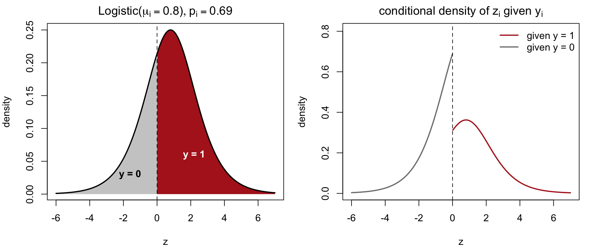
6.5.3 M-step
The M-step maximizes the weighted pseudo-data log-likelihood of the logistic-error regression. With \(r_{ik} = z_{ik} - x_i^\top\beta\) and \(\psi(r) = -\frac{d}{dr}\log f(r) = 2F(r) - 1\), so that \(\psi'(r) = 2f(r)\), its gradient and Hessian are
\[ \nabla_\beta Q = \sum_{i=1}^n x_i \sum_{k=1}^K w_k\, \psi(r_{ik}), \qquad \nabla^2_\beta Q = -\sum_{i=1}^n x_i x_i^\top \sum_{k=1}^K w_k\, 2 f(r_{ik}) . \]
The Hessian is negative definite, so \(Q(\cdot \mid \beta_t)\) is concave and a few Newton steps from \(\beta_t\) find its maximum. The M-step is thus itself an iterative algorithm, as it was for the Weibull shape in Section 6.4. The price is specific to the logistic link: with normal errors (probit) \(\ell_{\text{comp}}\) is a least-squares criterion, and the M-step is the ordinary least-squares fit of \(E(z_i \mid y_i, \beta_t)\), a truncated-normal mean, on \(x_i\).
6.5.4 The fixed point is the logistic MLE
At \(\beta = \beta_t\), \(r_i = z_i - \mu_i^{(t)} = \operatorname{logit}(U_i)\), so \(\psi(r_i) = 2U_i - 1\). Averaging over the uniform distributions of the E-step,
\[ E\big(2U_i - 1 \mid y_i, \beta_t\big) = \begin{cases} 2\big(1 - p_i^{(t)}/2\big) - 1 = 1 - p_i^{(t)}, & y_i = 1, \\ 2\big(1 - p_i^{(t)}\big)/2 - 1 = -p_i^{(t)}, & y_i = 0, \end{cases} \;=\; y_i - p_i^{(t)} , \]
and therefore
\[ \nabla_\beta Q(\beta \mid \beta_t)\Big|_{\beta = \beta_t} = \sum_{i=1}^n x_i\big(y_i - p_i^{(t)}\big) = \nabla \ell_{\text{obs}}(\beta_t), \]
the logistic-regression score (Fisher’s identity). A fixed point of EM solves \(\sum_i x_i(y_i - p_i) = 0\), which is the equation glm solves. Because the integrand \(2u - 1\) is linear in \(u\), Gauss–Legendre quadrature computes this gradient exactly for every \(K\), so the number of nodes affects the path of the iterates but not where they end.
6.5.5 Implementation
### Gauss-Legendre nodes and weights on (0, 1), weights summing to 1
### (Golub-Welsch: eigen-decomposition of the Jacobi matrix)
gauss_legendre01 <- function(K) {
j <- seq_len(K - 1); b <- j / sqrt(4 * j^2 - 1)
J <- matrix(0, K, K); J[cbind(j, j + 1)] <- b; J[cbind(j + 1, j)] <- b
e <- eigen(J, symmetric = TRUE)
list(u = (rev(e$values) + 1) / 2, w = rev(e$vectors[1, ])^2)
}
### observed log-likelihood of logistic regression
loglik_logit <- function(beta, X, y) {
eta <- drop(X %*% beta)
sum(plogis(eta, log.p = TRUE)[y == 1]) + sum(plogis(-eta, log.p = TRUE)[y == 0])
}
### E-step: n x K matrix of pseudo-values z_ik = mu_i + logit(u_ik), with the
### nodes u_ik placed in (1 - p_i, 1) when y_i = 1 and in (0, 1 - p_i) when y_i = 0
e_step_logit <- function(beta_t, X, y, gl) {
mu <- drop(X %*% beta_t)
p <- plogis(mu)
lo <- ifelse(y == 1, 1 - p, 0)
hi <- ifelse(y == 1, 1, 1 - p)
mu + qlogis(lo + outer(hi - lo, gl$u))
}
### M-step: Newton's method for the logistic-error regression of the weighted
### pseudo-values on X, started at the current beta (step halving as a safeguard)
m_step_logit <- function(Z, X, w, beta, tol = 1e-10, maxit = 50) {
Q <- function(b) sum(dlogis(Z - drop(X %*% b), log = TRUE) %*% w)
for (it in seq_len(maxit)) {
R <- Z - drop(X %*% beta)
grad <- crossprod(X, drop((2 * plogis(R) - 1) %*% w))
hess <- crossprod(X, X * drop((2 * dlogis(R)) %*% w)) # minus the Hessian
step <- drop(solve(hess, grad))
Q0 <- Q(beta)
while (Q(beta + step) < Q0 - 1e-12) step <- step / 2
beta <- beta + step
if (max(abs(step)) < tol) break
}
beta
}
em_logit <- function(X, y, beta0 = rep(0, ncol(X)), K = 20,
iterations = 2000, tol = 1e-9) {
gl <- gauss_legendre01(K); beta <- beta0
out <- matrix(NA_real_, iterations + 1, ncol(X) + 1,
dimnames = list(NULL, c(colnames(X), "log_lik")))
out[1, ] <- c(beta, loglik_logit(beta, X, y))
for (i in seq_len(iterations)) {
Z <- e_step_logit(beta, X, y, gl) # E-step
beta_new <- m_step_logit(Z, X, gl$w, beta) # M-step
out[i + 1, ] <- c(beta_new, loglik_logit(beta_new, X, y))
done <- max(abs(beta_new - beta)) < tol
beta <- beta_new
if (done) break
}
out[seq_len(i + 1), , drop = FALSE]
}6.5.6 Comparison with glm
Two data sets of \(n = 500\) share the covariates, an intercept, a standard normal \(x_1\) and a binary \(x_2\), and differ in the strength of the effects: \(\beta =
(0.3, 0.5, -0.5)\) (weak) and four times that (strong). EM starts at \(\beta = 0\) and uses \(K = 20\) nodes; glm uses its default start and a tight convergence tolerance so that both are accurate to many digits.
Code
set.seed(812)
n <- 500
X <- cbind("(Intercept)" = 1, x1 = rnorm(n), x2 = rbinom(n, 1, 0.5))
beta_true <- list(weak = c(0.3, 0.5, -0.5), strong = 4 * c(0.3, 0.5, -0.5))
y_logit <- lapply(beta_true, function(b) rbinom(n, 1, plogis(drop(X %*% b))))
fits <- lapply(y_logit, function(y) {
glm_time <- system.time(
fit <- glm(y ~ X - 1, family = binomial, control = glm.control(epsilon = 1e-14))
)[["elapsed"]]
em_time <- system.time(path <- em_logit(X, y))[["elapsed"]]
list(glm = fit, path = path, glm_time = glm_time, em_time = em_time)
})Code
cmp <- do.call(rbind, lapply(names(fits), function(s) {
f <- fits[[s]]; last <- f$path[nrow(f$path), ]
data.frame(data = s, method = c("glm", "EM"),
b0 = c(coef(f$glm)[1], last[1]), b1 = c(coef(f$glm)[2], last[2]),
b2 = c(coef(f$glm)[3], last[3]),
log_lik = c(as.numeric(logLik(f$glm)), last["log_lik"]),
iterations = c(f$glm$iter, nrow(f$path) - 1),
seconds = c(f$glm_time, f$em_time))
}))
gt::gt(cmp) |>
gt::fmt_number(columns = c(b0, b1, b2), decimals = 6) |>
gt::fmt_number(columns = log_lik, decimals = 6) |>
gt::fmt_number(columns = seconds, decimals = 3) |>
gt::cols_label(b0 = gt::md("$\\hat\\beta_0$"), b1 = gt::md("$\\hat\\beta_1$"),
b2 = gt::md("$\\hat\\beta_2$"), log_lik = gt::md("$\\ell_{\\text{obs}}$"))glm, but needs many more iterations, especially when the effects are strong. Estimates, maximized log-likelihood, iterations and elapsed time (seconds) of glm and of EM (\(K = 20\) quadrature nodes, started at \(\beta = 0\)) on the two data sets.
| data | method | \(\hat\beta_0\) | \(\hat\beta_1\) | \(\hat\beta_2\) | \(\ell_{\text{obs}}\) | iterations | seconds |
|---|---|---|---|---|---|---|---|
| weak | glm | 0.408191 | 0.457244 | −0.599900 | −329.974957 | 5 | 0.001 |
| weak | EM | 0.408191 | 0.457244 | −0.599900 | −329.974957 | 22 | 0.062 |
| strong | glm | 0.969009 | 2.017459 | −1.939325 | −220.775391 | 6 | 0.001 |
| strong | EM | 0.969009 | 2.017459 | −1.939325 | −220.775391 | 109 | 0.151 |
The two methods agree to about six digits in every coefficient and to the displayed precision in the log-likelihood, as the fixed-point argument predicts. glm needs a handful of Newton iterations; EM needs a few times more on the weak data set and many more on the strong one, and each EM iteration is also more expensive (an \(n \times K\) E-step and an inner Newton loop). The next subsection explains the difference between the two data sets.
6.5.7 Convergence rate and the missing information
Near the MLE \(\hat\beta\), EM is the linear map \(\beta_{t+1} - \hat\beta \approx J\,(\beta_t - \hat\beta)\) with
\[ J = I - I_{\text{comp}}^{-1}\, I_{\text{obs}}, \qquad I_{\text{obs}} = \sum_{i=1}^n x_i x_i^\top \hat p_i(1 - \hat p_i), \qquad I_{\text{comp}} = -\nabla^2_\beta Q(\beta \mid \hat\beta)\Big|_{\beta = \hat\beta} = \sum_{i=1}^n x_i x_i^\top c_i , \]
where \(I_{\text{comp}}\) is the complete-data information given the observed data, and \(J\) is the matrix fraction of missing information. The error eventually shrinks by the factor \(\rho\), the largest eigenvalue of \(J\), per iteration. At \(\beta = \hat\beta\), \(f(r_i) = U_i(1 - U_i)\), so \(c_i = E\{2U_i(1 - U_i) \mid y_i\}\) with \(U_i\) uniform on \((a_i, b_i)\):
\[ c_i = \frac{2\{G(b_i) - G(a_i)\}}{b_i - a_i}, \qquad G(u) = \frac{u^2}{2} - \frac{u^3}{3} . \]
When \(\hat p_i = 1/2\), \(c_i = 1/3\) while \(\hat p_i(1 - \hat p_i) = 1/4\), so a unit carries \(3/4\) of its complete-data information and the missing fraction is \(1/4\). When \(\hat p_i\) is near 0 or 1, \(\hat p_i(1 - \hat p_i) \to 0\) while \(c_i\) for the likely outcome stays near \(1/3\): knowing that \(z_i\) landed on the side of 0 where it almost surely lands says almost nothing about where \(z_i\) is, so nearly all the information about \(z_i\) is missing. Strong effects push many \(\hat p_i\) toward 0 and 1, \(\rho\) toward 1, and EM slows down.
Code
em_rate_logit <- function(beta, X, y) {
p <- plogis(drop(X %*% beta))
lo <- ifelse(y == 1, 1 - p, 0); hi <- ifelse(y == 1, 1, 1 - p)
G <- function(u) u^2 / 2 - u^3 / 3
I_comp <- crossprod(X, X * 2 * (G(hi) - G(lo)) / (hi - lo))
I_obs <- crossprod(X, X * p * (1 - p))
max(Mod(eigen(diag(ncol(X)) - solve(I_comp, I_obs), only.values = TRUE)$values))
}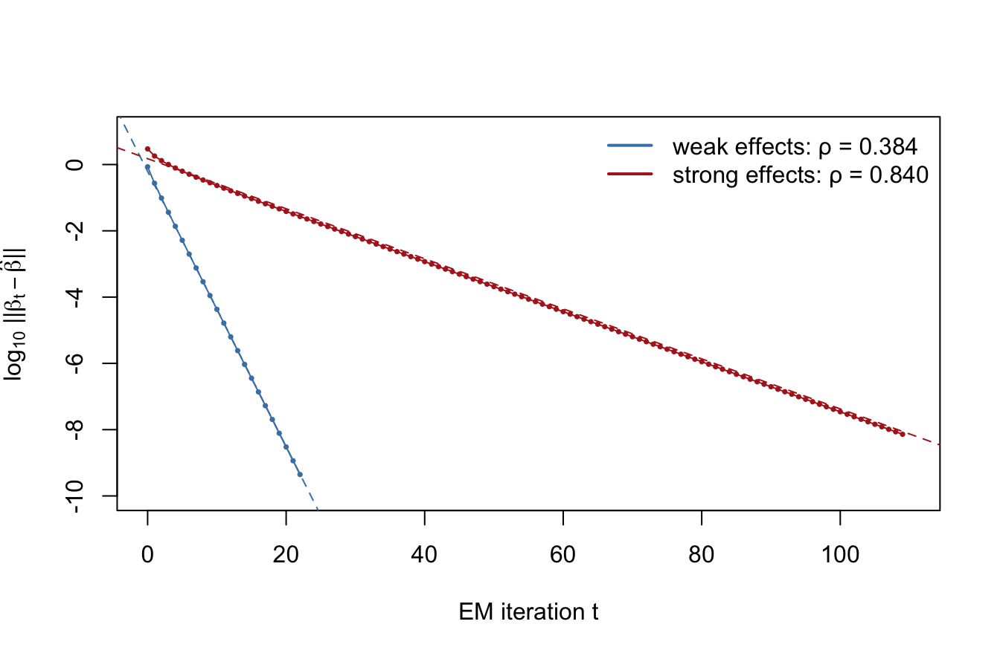
The observed slopes follow the predicted ones: on the weak data set \(\rho \approx 0.38\) and the error falls by an order of magnitude every two or three iterations; on the strong one \(\rho \approx 0.84\) and each order of magnitude costs about \(13\) iterations. Newton’s method (glm) is immune to this, because it uses \(I_{\text{obs}}\) directly and converges quadratically.
6.5.8 Remarks
- The choice of augmentation matters. The same model admits other latent variables. Writing the logistic likelihood as a mixture over Pólya–Gamma variables \(\omega_i\) (Polson, Scott and Windle, 2013) gives an EM whose E-step is \(E(\omega_i \mid y_i, \beta_t) = \tanh(\mu_i^{(t)}/2)/(2\mu_i^{(t)})\) and whose M-step is the closed-form weighted least-squares fit \(\beta_{t+1} = (X^\top \Omega_t X)^{-1} X^\top (y - \tfrac12)\), \(\Omega_t = \operatorname{diag}\{E(\omega_i \mid y_i, \beta_t)\}\). The check below runs it on the same two data sets; it reaches the same MLE in fewer iterations than the latent-logistic EM, each of them cheap.
- Why bother? For a point estimate, not much: Newton/IRLS is faster. The latent-variable view earns its keep elsewhere. Thresholded latent variables underlie ordinal and multivariate probit models, and the same augmentations give the Gibbs samplers of Bayesian binary regression (Albert and Chib, 1993, for probit; Pólya–Gamma for logit), where the conditional distributions derived above are exactly what is sampled.
Code
em_pg_logit <- function(X, y, beta = rep(0, ncol(X)), iterations = 2000, tol = 1e-9) {
for (i in seq_len(iterations)) {
mu <- drop(X %*% beta)
omega <- ifelse(abs(mu) < 1e-8, 1 / 4, tanh(mu / 2) / (2 * mu)) # E-step
beta_new <- drop(solve(crossprod(X, X * omega), crossprod(X, y - 1 / 2))) # M-step
done <- max(abs(beta_new - beta)) < tol
beta <- beta_new
if (done) break
}
c(beta, iterations = i)
}
t(sapply(names(fits), function(s)
c(round(em_pg_logit(X, y_logit[[s]]), 6),
latent_logistic_EM_iterations = nrow(fits[[s]]$path) - 1))) (Intercept) x1 x2 iterations latent_logistic_EM_iterations
weak 0.408191 0.457244 -0.599900 11 22
strong 0.969009 2.017459 -1.939325 45 1096.6 More Complex Applications
6.6.1 Model-based clustering
\[ Z_i \sim \text{Categorical}(\pi_1, \ldots, \pi_K), \qquad Y_i \mid Z_i = k \sim N_d(\mu_k, \Sigma_k) . \]
This is the multivariate, \(K\)-component generalization of Section 6.2. The E-step computes soft cluster memberships \(P(Z_i = k \mid y_i, \hat\theta^{(t)})\); the M-step returns weighted means, covariances and proportions. The mclust package implements this with a family of constrained covariance structures.
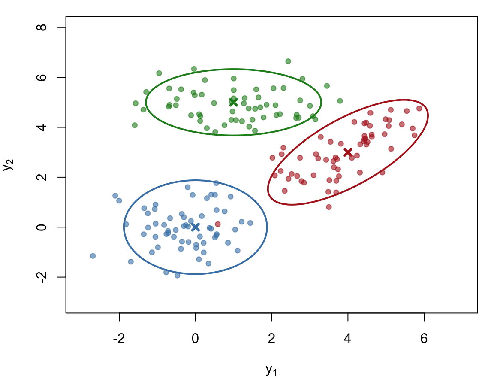
6.6.3 Factor analysis and the common pattern
\[ y_i = \Gamma x_i + \varepsilon_i, \qquad x_i \sim N_q(0, I) \text{ hidden}, \qquad \varepsilon_i \sim N_d(0, \Psi) . \]
The E-step uses the fact that \(x_i \mid y_i, \hat\theta^{(t)}\) is normal with closed-form mean and covariance; the M-step is a regression of \(y\) on the expected factors.
Across all these applications the recipe is the same:
- Introduce a hidden variable that makes the complete-data model tractable.
- E-step: compute the conditional distribution of the hidden data, or just the expected sufficient statistics if \(\ell_{\text{comp}}\) is linear in them.
- M-step: compute the complete-data MLE with those expected sufficient statistics in place of the unobserved ones.
The art is entirely in step 1. The same observed-data model often admits several choices of \(Z\), and they lead to EM algorithms with quite different convergence rates — faster when the augmentation adds little information, slower when the missing information is a large fraction of the total.
6.7 Justification of the EM Algorithm
This section shows why EM works: the observed log-likelihood never decreases, and EM is coordinate ascent on a single function of \(\theta\) and a distribution of the hidden data.
6.7.1 Cross-entropy and Kullback-Leibler distance
For distributions \(P\) and \(q\) of \(Z\), the cross-entropy of \(q\) relative to \(P\) is
\[ H(P, q) = -\int P(z) \log q(z) \, dz = -E_P\!\left[\log q(Z)\right], \]
so \(H(P, P)\) is the entropy of \(P\), and the Kullback-Leibler distance is
\[ \mathrm{KL}(P \,\|\, q) = \int P(z) \log \frac{P(z)}{q(z)} \, dz = H(P, q) - H(P, P) . \]
Gibbs’ inequality. \(\mathrm{KL}(P \| q) \ge 0\), with equality if and only if \(q = P\). Equivalently, \(H(P, q) \ge H(P, P)\): the cross-entropy is smallest at \(q = P\). It follows from \(\log x \le x - 1\):
\[ \mathrm{KL}(P \| q) = -\int P(z) \log \frac{q(z)}{P(z)} \, dz \;\ge\; -\int P(z) \left(\frac{q(z)}{P(z)} - 1\right) dz = -\int \left[q(z) - P(z)\right] dz = 0 . \]
6.7.2 The key identity
For every \(z\), \(\log P(Y \mid \theta) = \log P(Y, z \mid \theta) - \log P(z \mid Y, \theta)\), because \(P(Y, z \mid \theta) = P(Y \mid \theta) \, P(z \mid Y, \theta)\). Averaging both sides over an arbitrary distribution \(\tilde P\) of \(Z\) (the left side does not depend on \(z\), so the average leaves it unchanged) gives, for any \(\tilde P\),
\[ \ell_{\text{obs}}(\theta) = \int \tilde P(z) \log P(Y, z \mid \theta) \, dz + H\!\left(\tilde P,\, P(\cdot \mid Y, \theta)\right) . \tag{6.1}\]
The first term is the average complete log-likelihood under \(\tilde P\) and the second is a cross-entropy. For a fixed \(\tilde P\) the two terms, as functions of \(\theta\), add up to \(\ell_{\text{obs}}\); the figure shows one such split. The identity is used twice below: for the ascending property of EM and for the alternating-optimization view of EM.
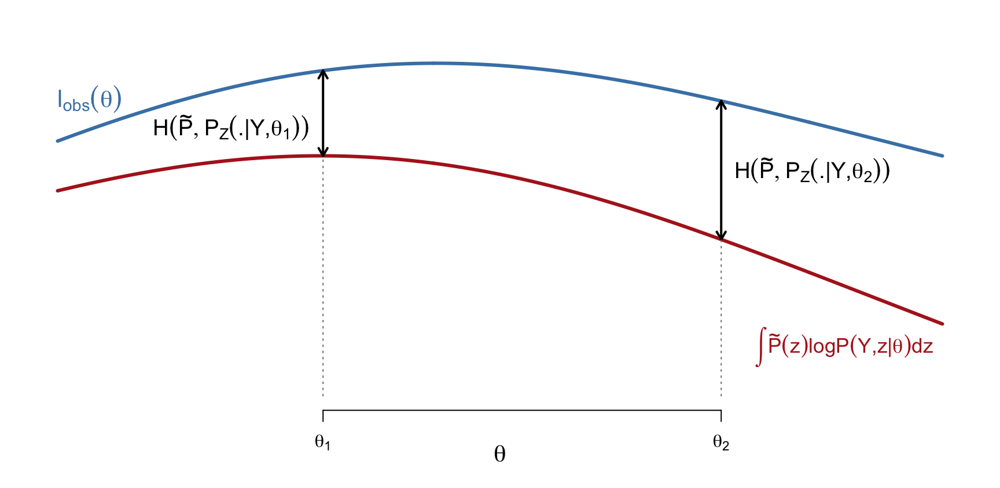
6.7.3 The ascending property
NoteTheorem
\(\ell_{\text{obs}}\!\left(\hat\theta^{(t+1)}\right) \ \ge\ \ell_{\text{obs}}\!\left(\hat\theta^{(t)}\right)\) at every iteration.
Plug \(\tilde P = P(\cdot \mid Y, \hat\theta^{(t)})\) into Equation 6.1. The first term becomes \(Q(\theta \mid \hat\theta^{(t)})\):
\[ \ell_{\text{obs}}(\theta) = \underbrace{\int P(z \mid Y, \hat\theta^{(t)}) \log P(Y, z \mid \theta) \, dz}_{Q(\theta \mid \hat\theta^{(t)})} + H\!\left(P(\cdot \mid Y, \hat\theta^{(t)}),\, P(\cdot \mid Y, \theta)\right) . \]
The M-step makes \(Q\) larger, and the cross-entropy is smallest at \(\theta = \hat\theta^{(t)}\) (Gibbs’ inequality), so it can only grow when \(\theta\) moves. Both terms increase, hence so does \(\ell_{\text{obs}}\).
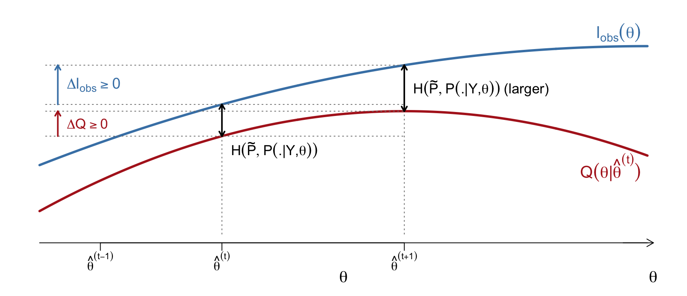
Proof: comparing two successive points. Write \(\tilde P = P(\cdot \mid Y, \hat\theta^{(t)})\) and \(P_\theta = P(\cdot \mid Y, \theta)\), so \(\tilde P = P_{\hat\theta^{(t)}}\). Subtract the identity at \(\theta = \hat\theta^{(t)}\) from the identity at \(\theta = \hat\theta^{(t+1)}\):
\[ \begin{aligned} \ell_{\text{obs}}\!\left(\hat\theta^{(t+1)}\right) - \ell_{\text{obs}}\!\left(\hat\theta^{(t)}\right) &= \left[Q\!\left(\hat\theta^{(t+1)} \mid \hat\theta^{(t)}\right) - Q\!\left(\hat\theta^{(t)} \mid \hat\theta^{(t)}\right)\right] + \left[H\!\left(\tilde P, P_{\hat\theta^{(t+1)}}\right) - H\!\left(\tilde P, \tilde P\right)\right] \\ &= \underbrace{\left[Q\!\left(\hat\theta^{(t+1)} \mid \hat\theta^{(t)}\right) - Q\!\left(\hat\theta^{(t)} \mid \hat\theta^{(t)}\right)\right]}_{\ge\, 0 \text{ by the M-step}} + \underbrace{\mathrm{KL}\!\left(\tilde P \,\|\, P_{\hat\theta^{(t+1)}}\right)}_{\ge\, 0 \text{ by Gibbs' inequality}} \;\ge\; 0 . \end{aligned} \]
The second line uses \(H(\tilde P, P_{\hat\theta^{(t)}}) = H(\tilde P, \tilde P)\) and \(H(P, q) - H(P, P) = \mathrm{KL}(P \| q)\). \(\blacksquare\)
Note carefully what the theorem does and does not say: the observed likelihood never decreases, but that guarantees convergence only to a stationary point, which may be a local maximum or even a saddle point.
The ascending property was proved by Dempster, Laird and Rubin (1977), who named the algorithm and gave it in this generality; their proof writes the cross-entropy term as \(H(\theta \mid \theta_0)\) and bounds it with Jensen’s inequality. Special cases of the iteration were in use earlier, for example Hartley (1958) for incomplete count data, Baum et al. (1970) for hidden Markov models (the Baum-Welch algorithm, with its own proof of monotone increase), and Sundberg (1974) for exponential families. The convergence argument of Dempster, Laird and Rubin had a gap, which Wu (1983) corrected: he gave conditions under which the iterates converge to a stationary point of \(\ell_{\text{obs}}\), and the example of a saddle point in the remark above shows why some conditions are needed.
6.7.4 The function \(F(\tilde P, \theta)\)
For any distribution \(\tilde P\) of the hidden data \(Z\), define
\[ F(\tilde P, \theta) = \int \tilde P(z) \log P(Y, z \mid \theta) \, dz + H(\tilde P, \tilde P) , \]
the average complete log-likelihood plus the entropy \(H(\tilde P, \tilde P) = -\int \tilde P \log \tilde P\) of \(\tilde P\). It has a second expression:
\[ F(\tilde P, \theta) = \ell_{\text{obs}}(\theta) - \mathrm{KL}\!\left(\tilde P \,\|\, P(\cdot \mid Y, \theta)\right) . \]
Why they agree. Rearrange Equation 6.1 by moving the cross-entropy to the right-hand side and adding \(H(\tilde P, \tilde P)\) to both sides:
\[ \begin{aligned} \int \tilde P(z) \log P(Y, z \mid \theta) \, dz + H(\tilde P, \tilde P) &= \ell_{\text{obs}}(\theta) - \left[H\!\left(\tilde P, P(\cdot \mid Y, \theta)\right) - H(\tilde P, \tilde P)\right] \\ &= \ell_{\text{obs}}(\theta) - \mathrm{KL}\!\left(\tilde P \,\|\, P(\cdot \mid Y, \theta)\right) . \end{aligned} \]
Since \(\mathrm{KL} \ge 0\), \(F(\tilde P, \theta) \le \ell_{\text{obs}}(\theta)\) for every \(\tilde P\) and \(\theta\), and equality holds exactly when \(\tilde P = P(\cdot \mid Y, \theta)\).
6.7.5 EM as alternating optimization
Both steps of EM are coordinate ascent on the single function \(F\):
- E-step maximizes \(F\) over \(\tilde P\) with \(\theta = \hat\theta^{(t)}\) fixed. Since \(\mathrm{KL} \ge 0\) with equality if and only if \(\tilde P = P(\cdot \mid Y, \hat\theta^{(t)})\), the E-step sets \(\tilde P_t\) to the conditional distribution of \(Z\).
- M-step maximizes \(F\) over \(\theta\) with \(\tilde P_t\) fixed. The entropy term does not involve \(\theta\), so this is \(\arg\max_\theta Q(\theta \mid \hat\theta^{(t)})\).
- Tight bound. After the E-step, \(\mathrm{KL} = 0\) at \(\theta = \hat\theta^{(t)}\), so the lower bound equals the observed log-likelihood there: \(F(\tilde P_t, \hat\theta^{(t)}) = \ell_{\text{obs}}(\hat\theta^{(t)})\).
The figure shows one full cycle. For a fixed \(\tilde P_t\), the curve \(F(\tilde P_t, \cdot)\) is a lower bound of \(\ell_{\text{obs}}\). The E-step at \(\hat\theta^{(t)}\) replaces the previous distribution by \(\tilde P_t\) and lifts the bound up to \(\ell_{\text{obs}}\) at that point (the green arrows; the dotted gray curve is the bound before such a lift). The M-step then moves along the new bound to its maximum \(\hat\theta^{(t+1)}\). There \(\ell_{\text{obs}}\) lies at least as high as the bound, which lies at least as high as the old value of \(\ell_{\text{obs}}\):
\[ \ell_{\text{obs}}\!\left(\hat\theta^{(t+1)}\right) \;\ge\; F\!\left(\tilde P_t, \hat\theta^{(t+1)}\right) \;\ge\; F\!\left(\tilde P_t, \hat\theta^{(t)}\right) = \ell_{\text{obs}}\!\left(\hat\theta^{(t)}\right). \]
This is the ascending property again, now as a statement about alternating maximization of a single objective, which cannot decrease it. The \(F\) formulation is due to Neal and Hinton (1998); related alternating-minimization results for KL divergences were given by Csiszár and Tusnády (1984). The view also explains the variational methods used when the E-step is intractable: restrict \(\tilde P\) to a manageable family and accept a bound rather than an equality.
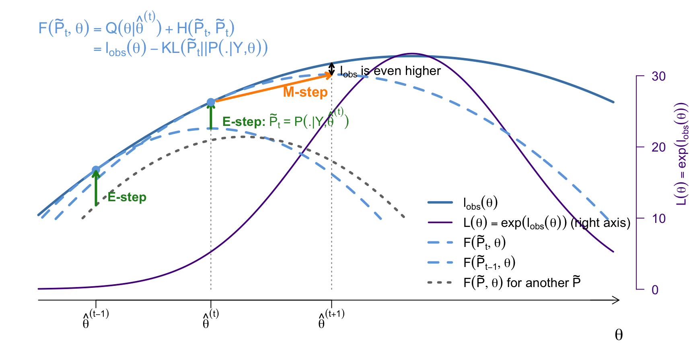
6.7.6 Example: tangent lower bounds for censored Poisson data
An example of Figure 6.20 for the censored Poisson model of Section 6.3. Here \(\tilde P_t\) is the conditional distribution of the \(n - m\) censored counts, independent Bernoulli variables with success probability \(p_t = \lambda^{(t)}/(1 + \lambda^{(t)})\), so its entropy is \(H(\tilde P_t, \tilde P_t) = -(n - m)\left[p_t \log p_t + (1 - p_t)\log(1 - p_t)\right]\). Each bound
\[ F(\tilde P_t, \lambda) = Q\!\left(\lambda \mid \lambda^{(t)}\right) + H(\tilde P_t, \tilde P_t) \]
is the curve \(Q(\cdot \mid \lambda^{(t)})\) shifted vertically by this number, which differs from one iteration to the next but not with \(\lambda\). It lies below \(\ell_{\text{obs}}\) and touches it at \(\lambda^{(t)}\); maximizing it moves uphill on \(\ell_{\text{obs}}\) itself.
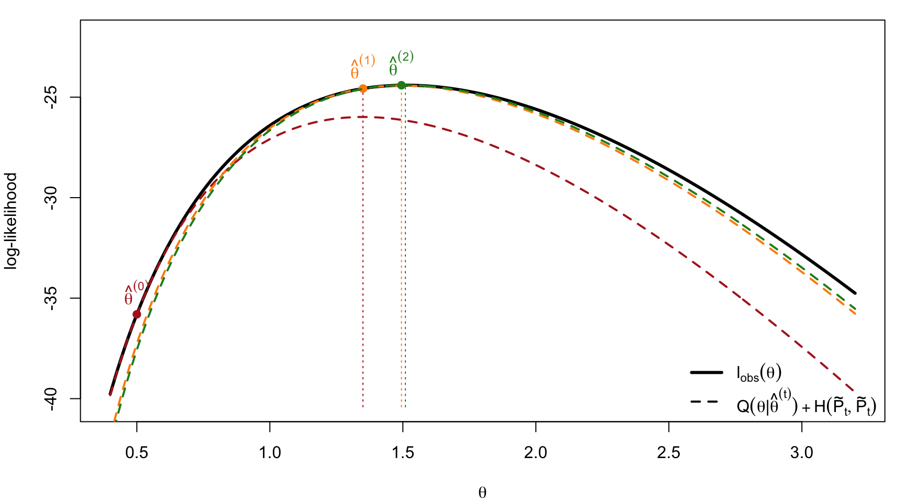
6.8 Summary
- EM maximizes \(\ell_{\text{obs}}\) by alternating between forming \(Q(\theta \mid \hat\theta^{(t)}) = E_{Z \mid Y, \hat\theta^{(t)}}[\ell_{\text{comp}}]\) and maximizing it.
- Every iteration weakly increases \(\ell_{\text{obs}}\). Equivalently, EM is coordinate ascent on \(F(\tilde P, \theta) = \ell_{\text{obs}}(\theta) - \mathrm{KL}(\tilde P \,\|\, P(Z \mid Y, \theta))\).
- When \(\ell_{\text{comp}}\) is linear in sufficient statistics of \(Z\), the E-step reduces to computing their conditional expectations. Otherwise the full conditional distribution is required, and “plug in the expectation” is wrong.
- Convergence is linear, often slow, and only to a stationary point. Run from several starting values and compare the attained log-likelihoods.
- Standard errors are not a by-product. Use Louis’ identity, the SEM algorithm, a bootstrap, or a final Newton step.
6.9 References
- Baum, L. E., Petrie, T., Soules, G. and Weiss, N. (1970). A maximization technique occurring in the statistical analysis of probabilistic functions of Markov chains. Annals of Mathematical Statistics, 41(1), 164–171.
- Csiszár, I. and Tusnády, G. (1984). Information geometry and alternating minimization procedures. Statistics & Decisions, Supplement Issue 1, 205–237.
- Dempster, A. P., Laird, N. M. and Rubin, D. B. (1977). Maximum likelihood from incomplete data via the EM algorithm (with discussion). Journal of the Royal Statistical Society, Series B, 39(1), 1–38.
- Hartley, H. O. (1958). Maximum likelihood estimation from incomplete data. Biometrics, 14(2), 174–194.
- Neal, R. M. and Hinton, G. E. (1998). A view of the EM algorithm that justifies incremental, sparse, and other variants. In M. I. Jordan (ed.), Learning in Graphical Models, 355–368. Kluwer.
- Sundberg, R. (1974). Maximum likelihood theory for incomplete data from an exponential family. Scandinavian Journal of Statistics, 1(2), 49–58.
- Wu, C. F. J. (1983). On the convergence properties of the EM algorithm. Annals of Statistics, 11(1), 95–103.